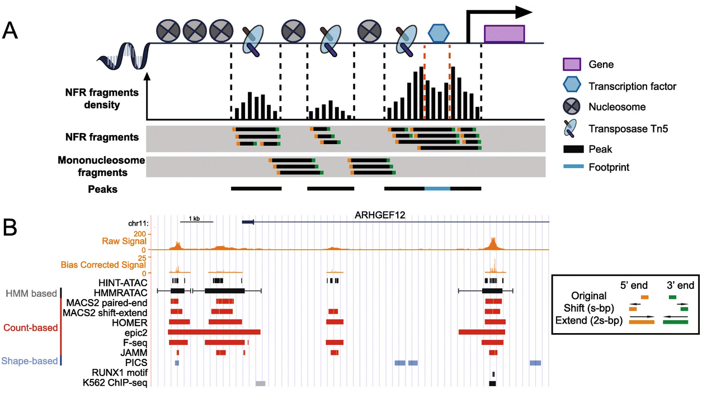

03 Peak calling and annotation
In this chapter you will learn about what are peak calling, peak annotation, as well as identifying transcription factor binding motifs and performing motif enrichment tests.
Learning objectives
- Learn how to perform operations with genomic intervals
- Compare peak sets between replicates and between samples
- Annotate peaks
- Map motifs to peaks and perform motif enrichment tests
1 Peak calling
Peak calling is a statistical method which allows us to identify regions enriched with fragments of accessible chromatin. This is a step necessary for all chromatin accessiblity assays such as ATAC-seq, ChIP-seq, DNase I-seq, MNase-seq, FAIRE-seq etc.
The principle is simple. We break the genome into small windows, and we test whether the number of fragments (or reads) in a window is statistically higher than the number of fragments expected.
One of the most popular peak calling tools is MACS. It was originally developed for ChIP-seq data but it has found applications in other assays including ATAC-seq, CUT&RUN etc. Although . Besides MACS, there are a few other options for calling ATAC-seq peaks such as Genrich and HMMRATAC.

2 Operations with genomic intervals
One of the most common tasks in genomic data analysis is genome arithmetic. How many genomic elements in list A overlap with elements in list B? What is the average ChIP-seq signal over the regions in my list? How far is this element for the nearest TSS? How can I extract intronic regions of a gene given the exons? These are some examples that involve genome arithmetic operations. Genome arithmetic operations occur on a genomic coordinate system which requires at least two values to define an interval; a start coordinate and an end coordinate which is typically denoted like so: 1234-2345. If we operate on multiple sequences/scaffolds/chromosomes then we would need the sequence name (or chromosome name) and the notation would look like this chrZ:1234:2345.
{kind=link}
There are a few estblished tools for performing genome arithmetic. The most popular one is bedtools which is a swiss army-knife able to perform all kinds of genomics analysis tasks with genome arithmetics beeing the most widely used function. Similar to bedTools there is BEDOPS which is preferred for its simpler command format and speed, although latest bedtools implementations seem to perform equally fast. For performance benchmarking information see here.
Let’s create a results directory first.
RESULTS="results/03_peaks"
mkdir -p ${RESULTS}First, we need to unzip the compressed bed files
for GZ in data/*/*bed.gz; do
gunzip $GZ
doneBefore performing any interval operations we need to make sure the files are position sorted!
BEDOPS offers a convenient funciton for fast sorting of genomic intervals
for BED in data/*/*.bed; do
echo "Sorting ${BED}..."
sort-bed $BED > ${BED}.sorted
doneNow let’s count how many peaks are there per sample:
for BED in data/*/*.bed.sorted; do
wc -l ${BED}
done149626 data/ENCSR558ZSN/ENCFF002MKC.bed.sorted
142405 data/ENCSR558ZSN/ENCFF235RAD.bed.sorted
112340 data/ENCSR977LVI/ENCFF284IBU.bed.sorted
111615 data/ENCSR977LVI/ENCFF851MGR.bed.sortedAccording to ENCODE ATAC-seq standards, for an acceptable ATAC-seq experiment we expect >100,000 peaks per sample.
3 Calculating similarity between sets of intervals
In this excercise we have 4 sets of peaks called from the two samples with 2 replicates each:
| Sample | Info | File |
|---|---|---|
| ENCSR977LVI | Homo sapiens T-cell female adult (21 years), rep 1 | ENCFF002MKC.bed.gz |
| ENCSR977LVI | Homo sapiens T-cell female adult (21 years), rep 2 | ENCFF235RAD.bed.gz |
| ENCSR558ZSN | Homo sapiens activated T-cell female adult (21 years), rep 1 | ENCFF851MGR.bed.gz |
| ENCSR558ZSN | Homo sapiens activated T-cell female adult (21 years), rep 2 | ENCFF284IBU.bed.gz |
One of the first tasks when dealing with replicates it’s assessing the replicate concordance, i.e. how much the two peak sets overlap. One way to do this is by calculating the Jaccard similarity between the two sets. Jaccard similarity is calculating by dividing the intersect over the union. bedtools has a very convenient function to calculate this. For details on the bedtools jaccard function see here.
samples=("ENCSR977LVI" "ENCSR558ZSN")
for sample in ${samples[@]}; do
files=(`ls data/${sample}/*.bed.sorted`)
fileA=${files[0]}
fileB=${files[1]}
echo "Jaccard similarity report between replicate 1 and replicate 2 for sample ${sample}:"
bedtools jaccard -a ${fileA} -b ${fileB}
echo -e "\n"
doneJaccard similarity report between replicate 1 and replicate 2 for sample ENCSR977LVI:
intersection union jaccard n_intersections
33571756 41880240 0.801613 54880
Jaccard similarity report between replicate 1 and replicate 2 for sample ENCSR558ZSN:
intersection union jaccard n_intersections
44143512 57000632 0.774439 764844 Count how many peaks overlap between two sets
A common task is to test how many peaks are shared between two samples. This will answer questions such as how similar is the accessible chromatin landscape between two treatments/cell types/timepoints etc.
In this excercise we will evaluate how many peaks discovered from unstimulated T cells (ENCSR977LVI) are overlapping by at least 50% peaks in the stimulated T cell experiment (ENCSR558ZSN).
# Chose one replicate per sample
unstim="data/ENCSR977LVI/ENCFF851MGR.bed.sorted"
stim="data/ENCSR558ZSN/ENCFF002MKC.bed.sorted"
bedops -e 50% ${unstim} ${stim} > ${RESULTS}/unstim_peaks_shared_with_stim.bed
wc -l ${RESULTS}/unstim_peaks_shared_with_stim.bed87359 results/03_peaks/unstim_peaks_shared_with_stim.bedWhy didn’t we try bedtools jaccard this time?
How many peaks in the stimulated set overlap by 50% the peaks in the unstimulated set?
5 Peak annotation
conda install homer
# Instal hg38 version of human genome
~/.conda/envs/atac/share/homer/configureHomer.pl -install hg38
annotatePeaks.pl $peaks hg38 -size given -CpG -annStats results/03_peaks/$(basename $peaks).annstats.txt > results/03_peaks/$(basename $peaks).annotated.txt```r annotated <- data.table::fread(“results/03_peaks/ENCFF002MKC.bed.sorted.annotated.txt”, data.table = FALSE)